WARNING: If you don't want to read quite a lot I suggest you skip directly to the YouTube videos further down! 🙂
INTRO
First of all I wanted to mention that i designed this solution mainly with the Oculus Rift in mind, but this concept could be applied to most types of HMDs, that's why i put it under the R&D section.
I think by now everyone in this forum understands the need for true 6DOF positional tracking so i won't go over it again. I will just stress what Mr Abrash from Valve mentioned at Quakecon: parallax is even more important than stereoscopy for VR/AR. Here's an interesting link:
http://cb.nowan.net/blog/2010/04/28/does-stereoscopy-s3d-matter
The thing with positional tracking is that there are not only many different approaches to tackle this problem but also many different factors that determine which approach is best fitted in each scenario (seated vs standing play, short vs long distance, occlusion, magnetic interference, complexity of setup/calibration process, usability with backtops, 360 degree freedom of movement, etc). There's already some really good progress by members of this forum on systems designed for specific use cases, like Chriky's fiduciary markers for 1:1 real world location mapping or Brantlew's Red Rovr Motion for redirected movement in open spaces to name a few.
I however wanted to focus on a completely different use-case, a consumer-friendly approach to solve positional tracking for the average gamer playing at home. Here i believe the main priorities should be easy setup, robust seated play without angle restrictions and ideally 360 degree freedom of movement inside a small play area. For me easy setup implies having a maximum of one external tracking device which is easy to position (i.e you don't have to mount on the ceiling), something like the Wii or Kinect for instance. I also believe the overall appearance of the system is really important if you want a successful commercial device.
Future and available solutions:
Focusing on a consumer-friendly scenario i believe some of the most promising solutions on the long-term are magnetic tracking or PTAM/visual odometry. I think they are both very valid approaches, and probably the future for VR, but we're still not quite there based on what i've seen so far. On the short-term (as in available right now) one of the most popular approaches seems to be "outside-in" optical tracking systems. In general some of the advantages of an external, inward-looking approach are low processing requirements and low latency.
One example of outside-in optical tracking is the PS Move method, like seen in Project Holodeck (basically strapping 1 PS Move wand on top of the head and use 1 camera for tracking). The problem i have with this type of system (apart from looking quite dorky) is: what happens if you look 90 degrees up? with only 1 camera and 1 marker you will always face occlusion problems..
Another popular optical solution out there is the TrackIR. This is actually pretty close to what i would want from a tracking system. The only problem with TrackIR is again to do with angles and occlusion: it has a very limited range (about 45 degrees) which is ok if you have your vision fixed on a computer screen but not good enough when wearing a VR headset. Also the working range (about 1.5 meters) is a bit shorter than what i would like (ideally 3 to 4 meters).
My approach:
So my line of thought was: if we already have a proven technology that when it works it works well, why not simply try to extend it and solve the low-angles and occlusion problems by adding more markers on the target? And while we're at it, why not use one of the big hurdles of VR (having to actually wear a head-mount) in our advantage to integrate the solution?
A few months back i was following this very interesting topic on 6 DOF head tracking ideas:
http://www.mtbs3d.com/phpBB/viewtopic.php?f=120&t=15040
After a few posts on this and some other related threads i was quite surprised to find out that apparently no-one in the forum had tried to implement something similar before or given it much thought.. so i decided to give it a try myself as soon as i found some spare time!
Basically my main design goals were:
1- Positional tracking (real 6DOF) with 360 degree horizontal and 90 degree vertical freedom
2- Maximum one external tracking device (camera), easy to setup, no need for user input or calibration
3- NOT having "protruding antennas" (TrackIR style) or "external glowing balls" (PS move style).
Reason A: they make the HMD more break-prone; Reason B: they don't look very cool
I think there's a place for a mid-term solution, something which might not be the definite positional tracking for VR but still better than existing alternatives.
THE PROPOSED SOLUTION (proof of concept)
The HARDWARE:
First of all i would like to present "the truncated cube", in case you don't know him!
The nice thing about the truncated cube is that whatever way you look at it you can always see at least 4 of its faces. For pose estimation of a 3D object you kind of need to see 4 non-coplanar points at all times, so if we were to put markers on each face of a truncated cube this is could be a perfect match for our purpose. Fortunately it doesn't have to be a completely uniform polyhedron, a truncated cuboid also shares this characteristic. Another good thing about this type of polyhedra is that its shape can easily become the base of a HMD shell design.
Marker integration
The next problem that we have is that for pose estimation we not only need to "see" the markers but we need to be able to identify them, as in put a number to each marker and be able to tell which one is which.
Infrared (IR) markers are popular because they are very easy to discriminate from the background with proper filters, but being able to detect several colors can help to simplify the problem a lot. Colors on the visible spectrum are obviously harder to detect than IR but we have something that we can use in our advantage: since we are integrating these markers on a HMD we can actually control the background where the colors are displayed to make blob detection easier.
Here are some of my first experiments, where i decided to use simple color stickers on the darkest background possible. For that i used flocking paper found in telescopes, which is more practical and uniform than using black velvet for instance. Also i think i forgot to mention, i'm using a PS Eye as the main camera for the image processing.
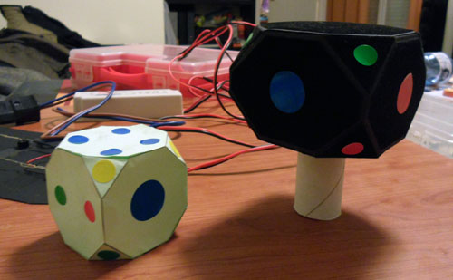
With this setup i managed to get pretty good results; it was good enough to build the main blob analysis algorithm and i was able to discriminate 4 basic colors (r,g,b,y). As expected the problem was that the result was very dependent on ambient light, small changes would make the recognition fail. The obvious next step was moving to color LEDs.
Looking back finding the right LEDs to use was one of the biggest unexpected difficulties i found; they need to have a wide angle and display uniform light, and i had to test quite a few number with different current intensities and camera settings until i found ones that performed good enough.
I also found out that i had to reduce the camera gain and exposure almost to the minimum settings possible in order to get correct colors (not white over burn), this in turn helped to reduce blob "trails" in fast movements and also had another good effect: since the whole image is darkened, blob-detection is already half-solved because only bright lights stand out. This actually makes the flocking dark paper quite unnecessary, but i decided to leave it anyway. Here i made a silly mistake though: i made all these tests with the camera running at 30fps instead of 60 and later i realized this really affects the colors detected.
Here you can see the power source i used and one of the tests i made with LEDs:
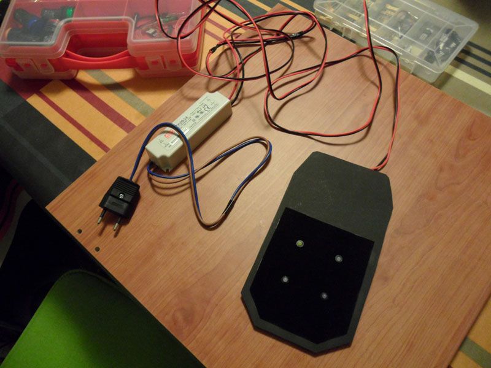
So once i was happy with the LEDs i found it was time to build the main prototype. In theory we need to have only one marker per side of the truncated cuboid (16), this way we always have a minimum 4 non-coplanar points visible (and most of the time redundancy which is not bad). In practice though this cuboid has to be split in 2 parts (front and back of the HMD) so i thought that on the sides and top it would be better to have LEDs on both parts, even if they shared the same theorical plane. This is necessary to overcome occlusion by the head/neck itself.
Even though it wasn't strictly necessary i decided to use some pilot lights for the front and the back in order to have 2 more different types of markers that would help with the point detection. I also decided to put 2 LEDs on the top and bottom of each part so we could detect at least 4 when looking straight from the top/bottom, without depending on the other part of the HMD. Later i regretted this 2 decisions though, since they complicate the design, the detection algorithm and actually give more problems than benefits..
Another mistake i made in retrospect was to fix the intensity of the LEDs using voltage regulators LM317 in combination with fixed resistors.. i should have used potentiometers instead, in order to be able to vary the intensity of the LEDs without having to redo any soldering.. oh well..
Anyway in the end my final design contained 22 individual markers of 6 different types: r, g, b, w, B pilot, Y pilot.
Obviously in order to detect correctly the 22 different markers it would be ideal if we could have 22 different colors, but that is really not practical and i would dare say not possible, at least with the PS Eye hardware. However having 4 or 6 different types of markers is enough for point detection if you distribute them more or less cleverly and take into account the surrounding markers while trying to identify an individual one. The LEDs don't have to be on the exact positions i used or same colors, you can get creative with this. The only 2 rules are always 4 non-coplanar points visible and colored in a way it's possible to match them with the complete 3d model.
Some pictures of the building process:
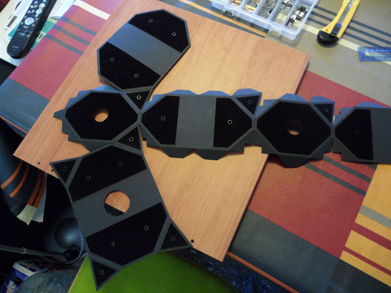
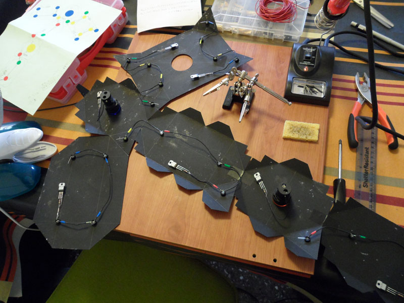
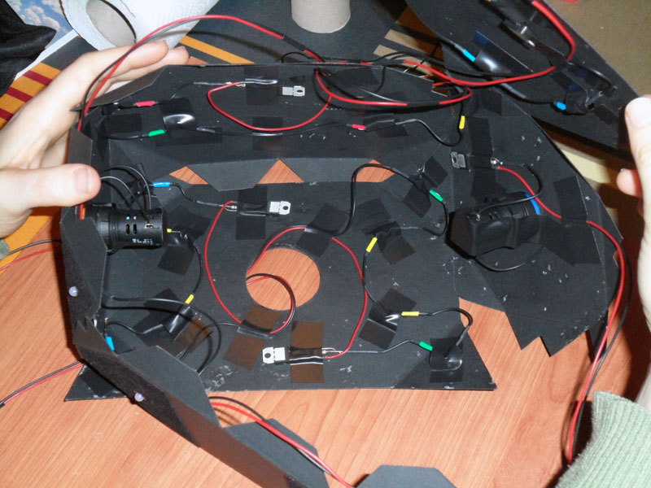
DIY rough cost estimate:
-20 LEDs -> 15$ -2 pilot lights -> 8$ -1 PS camera -> 15$ -LM317Ts, resistors, wires, etc -> 5$ aprox TOTAL aprox cost -> 43$
I think if bulk buying the components this could be reduced greatly, probably under 12$ if you don't count the camera cost. If DIYing you may need to add an AC/DC power supply - aprox 15$, which of course is not necessary if it's integrated with the existing HMD supply.
And here go some images of the finished prototype:
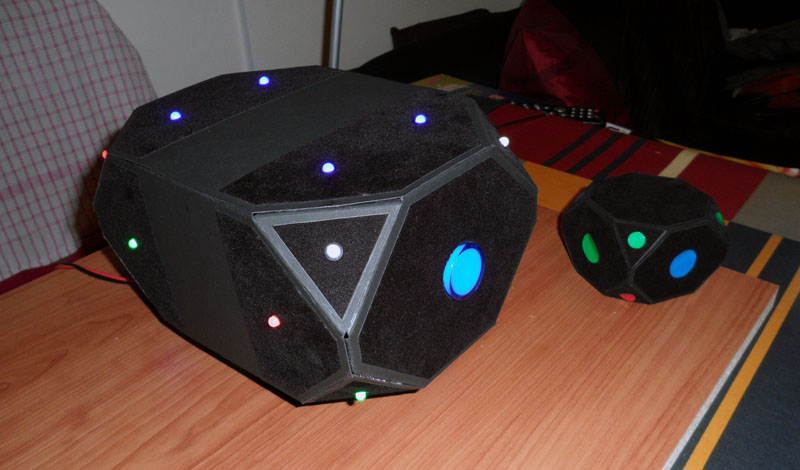
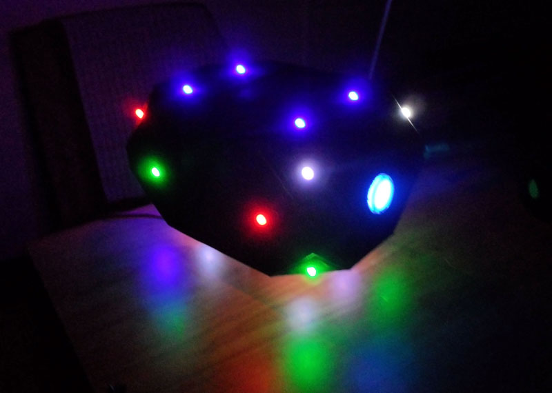
The SOFTWARE:
For the software side i decided to go with C/C++ since having the lowest possible latency is really important. I also decided to use OpenCV for the image analysis side and OpenGL to show some results. I've never used OpenCV before and i found it very good in general, apart from some outdated documentation in places.
Brief program explanation:
Initialization:
- Create / store 3D model of markers
- Apply gaussian blur to the image to prevent false blobs from being detected
Core functionality:
- Blob analysis: detect ellipses, obtain center coordinates, color and type
- Point detection: Match results of blob analysis with 3d model, numbering each marker
- Pose estimation: use the matched 3d model points and 2d image points to estimate the pose of the object
Show results:
- Apply Kalman filter
- Paint results of blob analysis and point detection with OpenCV
- Paint simple in-game map with OpenGL
To start off i decided to create my own blob detection algorithm in order to have greater control of the conditions and results. I was pleasantly surprised that my custom scanning patterns proved very reliable detecting up to 5 different colors (r, g, b, w, y) under very different light conditions (complete darkness, artificial light and direct sunlight) and up to 1.5m distance approximately; not as good a distance as i would like but I'm quite confident that this could be improved to 2.5 - 3m without too much difficulty. Still, for now it was good enough to move the main focus to other parts of the problem..
For the point detection i faced the problem of having to identify 22 different markers having only 5 different colors. In order to do that I created quite a big number of fairly complex rules for each marker, that take into account not only the color of the current marker but the relative position and angles of the adjacent ones from all the possible views. This part can still be improved as sometimes the detection fails, but at this point i realized it would be better to rethink a bit the distribution of the LEDs on the hardware before trying to improve the software side.
For the pose estimation part i decided to use the OpenCV implementation of the POSIT algorithm. Unfortunately is not as simple as calling a function since the input expects the whole list of points of the object you want to detect, starting always with the same origin point, and for each frame we only have a small subset of these (the points visible by the camera). I managed to get around this by using a few tricks, which i won't go into detail for now 🙂
After we have the position and orientation values I thought it would be cool to show a simple real-time representation of a room, so it's easier to evaluate the quality of the output. To do this i created my own OpenGL "engine", so i could have total control of how the combination of inputs affect the movement "in-game". The map i used is a modified by hand version from one of Nehe's OpenGL tutorials: the result is a funky colored temple, with some kind of "tombstones" inside. Head motion detection is exaggerated on purpose for demonstration, should be toned down when using it with a real HMD.
Results:
I think the first results although not perfect are quite promising, as i managed to get a fairly reliable tracking with a good response and good precision, which even at 30 fps feels very fluid. I have tested 60 fps successfully but the blob analysis results are not as good as with 30 fps because the intensity of LEDs is not properly adjusted. This should be fixed with a fairly simple hardware modification.
In the video the little "wings" that you can see on top and bottom of the prototype were added to simulate the top part of the head and the neck blocking some of the LEDs. You can still see some small glitches from time to time due to the LED detection failing, as i mentioned it could probably be corrected with more complex rules but i have already thought of some modifications in the hardware and marker distribution to prevent it.
Also most of the jitter you can see (specially with the Kalman filter off) is related to orientation, but this system main purpose is to get positional tracking, so in combination with an IMU for orientation values and leaving the optical tracking to get only the positional information, the final result should be much better. Even though finding orientation was not the main goal of this project, these values are still very usable as you can see on the video.
I don't really know the latency introduced by the PS Eye camera itself but i decided to take some measurements in order to see the latency introduced by my software:
- normalized box filter blur = 3.38 ms
- blob analysis = 4.20 ms
- point detection + pose estimation = 0.06 ms
- opencv paint results = 0.60 ms
- opengl paint results = 0.06 ms
TOTAL 8.30 ms aprox
First i used OpenCVs Gaussian Blur, but that was taking about 5.20 ms. Later i i realized i could get away replacing it with a Standard Blur (Normalized Box Filter). Blob detection still works great, and latency was reduced by almost 2ms (from 5.20 to 3.38 ms). I believe there's still room for improvement in this area though.
Recap of current prototype limitations:
- Blob analysis distance 1.5m. With hardware and software modifications could be improved to 2.5 - 3m
- Point detections fails sometimes: could be fixed using a different LED distribution
- 30 fps. 60 fps should be easy to obtain (simply the intensity of LEDs is not properly adjusted). 120 fps possible (at the expense of detection distance due to reduced resolution)
How would a real HMD that uses this system look like?
They say a picture is worth a thousand words, so i decided to add a few 3d renders to better show how the idea could be applied to real-life HMDs. Please bear in mind that they are not intended to be very accurate, mechanically correct or even have the right proportions..
The HMD would have to be separated in 2 different sections, and these could be connected by a telescopic tube for instance, used to maintain rigidness between both parts and to measure the distance between them (in order to feed the tracking algorithm with the exact 3d model). This same information could be useful for other purposes like feeding binaural audio processing with the approximate size of the head.
Original idea for a full 360 degree positional tracking HMD, on which the cardboard prototype of the pictures and videos is based:
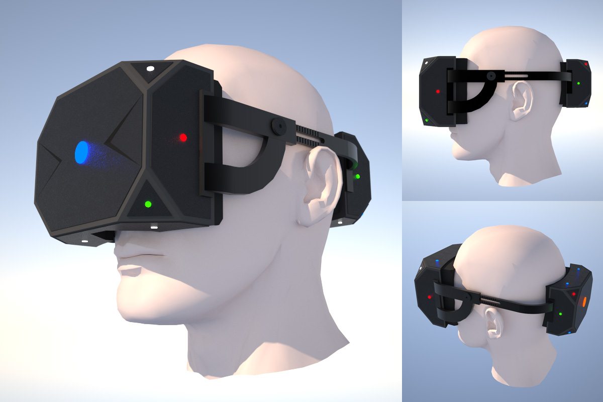
Front and back don't really need to be equal, they simply need to have the markers on fixed positions. I think if this system was applied to a commercial HMD the back part could be used for connectors or to store a wireless receiver and a battery for instance, or simply to counter the weight of the front part and even the center of gravity of the head mount. Maybe following a similar design to some of the 90s Virtuality systems. Also if having a separate back part of the HMD was too much of a problem, the idea could still be used with only the front part, limiting the movement to about 100 degrees in each side (200 total) which would still probably be usable in VR if you keep this limitation in mind while playing.
SOME ADDITIONAL THOUGHTS
Even though my main priority with this project was seated play, i believe that in combination with a HMD wireless connection and with some improvements on distance detection you could have complete freedom of movement limited to a small area (the FOV of the PS3 camera at a maximum of 3 meters distance approximately). As it is now i think it's good only for seated play, standing/rotating in place could work but you would have to mount the camera on some sort of stand (at head level) and not have much margin to move around.
As mentioned earlier it's clear that for a consumer device it would be ideal not to have an external tracking device, but i believe having only 1 camera is acceptable, as most people are used to devices like move or Kinect. In fact it could even be seen as a "safety feature": when you walk out of the FOV of the camera the system could pause and warn you. Finally i would like to point out that sometimes we geeks tend to forget that looks is one of the most important aspects for a consumer device. I know as it is now my little prototype doesn't look awesome (and looks are very subjective), but i think it has the potential to look pretty cool. Personally i think it has a Cyclops meets Iron Man kind of vibe 🙂
General Limitations:
- The main "problem" of this solution is that the case design of the HMD needs to be adapted to it. I want to make clear that this whole idea is not very practical if you want to add positional tracking to an existing HMD (although everything is possible). It is intended to be part of the shell design for a new HMD built with optical tracking in mind (either DIY or commercial).
- Accuracy degrades with distance, still quite good from 1.5 meters. Could be improved.
- If someone walks between you and the camera while playing you can lose positioning. Again maybe this could actually be turned into a good "feature": If someone occludes the camera for more than 3 seconds it could be a way to communicate they need your attention. It would be good to have a method to do this as someone already suggested before:
http://www.mtbs3d.com/phpBB/viewtopic.php?f=140&t=15413
Rift developer kit add-on?
Here's a possible idea for a Rift developer kit add-on, or as i like to call it "Rift-Hugger" (inspired by the face-huggers from Alien!). The back part could be used to store standard batteries that would power the LEDs. My guess is that the front plate of the developer kit can be easily removed with the clips on the side. If not the add-on could be simply attached on top of it. The moving parts on the side that hold the Rift could have some sort of locking mechanism as well.
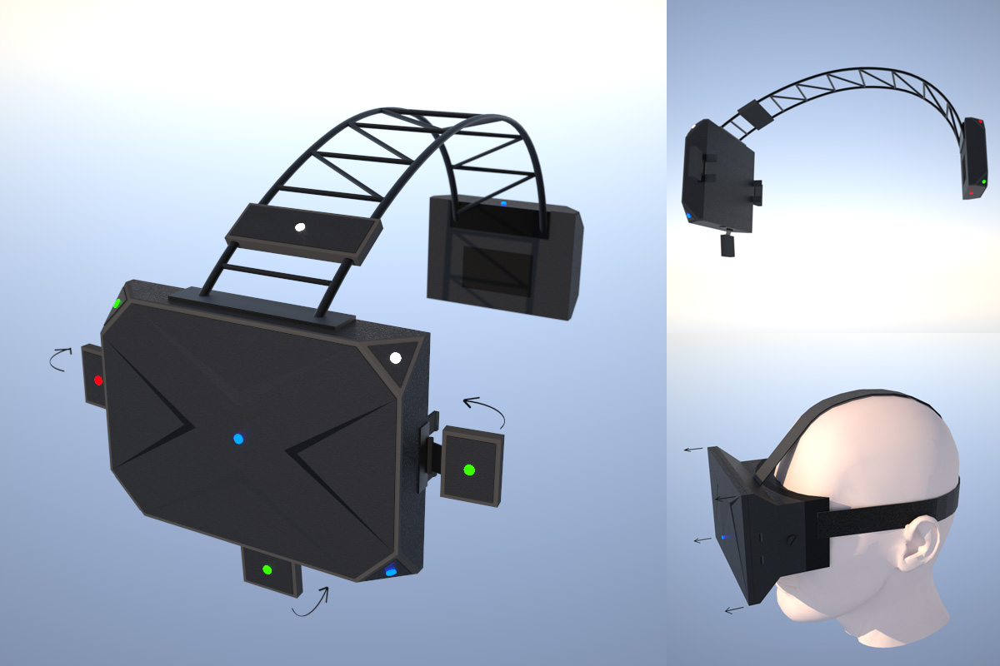
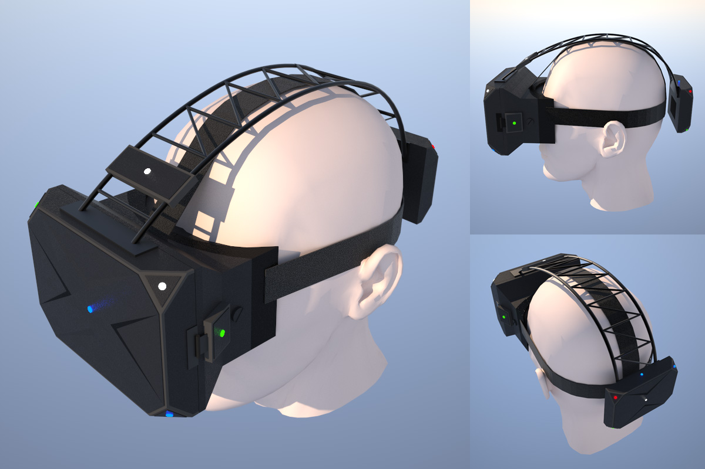
As you can see, as a separate add-on it wouldn't be ideal, it would have to be targeted to a specific HMD model and it wouldn't be easy to DIY, but it could still be done (and very cheaply in fact if mass-produced in a factory).
Possible next steps / future improvements:
- Build another improved prototype: modify LED distribution, separate circuits by colors, use potentiometers instead of resistors, etc.
- Leave orientation to nrp's adjacent reality tracker IMU and use optical only for positioning; unfortunately it's not available yet. Reality tracker should be much more accurate and precise for orientation, play with fusion algorithms.
- Adapt prototype to developer Rift size and shape. As i mentioned before the ideal path would be to design the casing with the optical tracking in mind not the other way around, but after seeing the prototype pictures i think we could do something with it. As it is (without adding a rear part) it would not be possible to have the full 360 deg but i reckon i could get about 240 deg lateral tracking (120 rotation to each side), something still very usable in many scenarios, and a nice step up from TrackIR for instance.
- Increase capture distance by software (adjust color thresholds depending on distance between LEDs).
- Improve blob recognition to allow lower resolution input (120 fps mode).
- Use a cheap graphics card (CUDA) or a FPGA to speed up the image processing?
- Track 2 headsets at the same time 1 with camera?
- Extend system for hand tracking?
- Add FreeTrack support / create a plugin for FreePie / create a new VRPN driver?
Still have to look into these options and decide which one should i try first..
It would be really cool if I could test the prototype with an existing game that supports 6 DOF, like Arma 2 for instance.
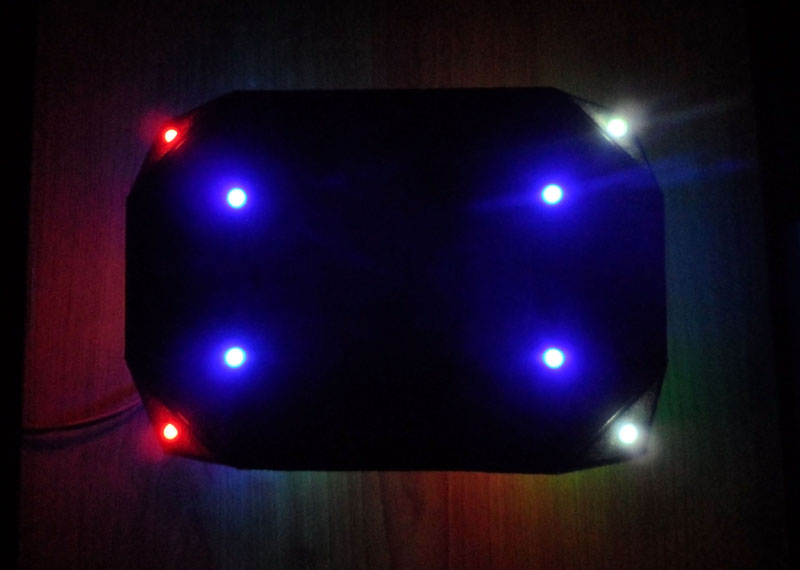
About the POSITTRON name:
I have to say that i'm not really planning to patent it or anything, i put a name just for fun. I think it suits the project quite well, and sounded better than the boring alternative thread title "HMD optical marker integration".
The POSIT part is quite obvious, as it's a positional tracking system, and i also happen to use the POSIT algorithm to solve the pose estimation problem. On the TRON side, well TRON is like THE original movie about VR (although not very realistic) and they also happen to use helmets with bright LEDs surrounding them, not too different to my design really! Oh, and I quite like the English band Ladytron 🙂
TO FINISH OFF (SALES PITCH STUFF)
So I know the proposed solution is not the holy grail of tracking, but i believe it's a realistic and ready to go solution that solves some real problems. Let me finish with a list of benefits (box ad style), they are NOT all true with the current prototype version, but could be on a more finalized design:
- Precise (sub 1mm) positional tracking (6DOF) with 360 degree horizontal and 90 degree vertical freedom of movement. No magnetic interference, no self-occlusion, no drift.
- Working range from 50cm (in front of a computer) to 3 meters (in front of a TV set/play area). Seated or standing play. Wireless!
- 120 fps ready, low latency, fast processing (not computationally expensive).
- Uses open-source software and of-the-shelf available hardware (cheap components).
- Only one external camera needed which can be placed anywhere in front of the player, no need for calibration.
- It can look pretty cool, i believe
Oh and of course in marketing terms, if this was to be added on top of a 9 DOF tracker like the adjacent reality, i guess it could be called a 15 DOF system:
3 DOF accelerometer + 3 DOF gyroscope + 3 DOF magnetometer + 3 DOF optical orientation + 3 DOF optical positioning = 15 DOF!
I have to say that it has been quite a challenge to find the time to implement all this; i had the idea burning in my head since the end of july more or less, but couldn't start working on it until september. Since then, with a full-time job as web developer, i have been able to spend only a few hours a week on this project..
Anyway it seems like Oculus are looking into using PTAM for localization/positioning, which i think is the right move in the long term; I really hope they can manage a properly robust and low-latency implementation. Still I think something closer to my design could be a simpler and safe alternative / plan B, in case the PTAM research doesn't pan out in time for the consumer Rift. I also think this design fits quite well with Palmer's approach of "doing more with less".
Personally i believe this solution would be ideal for the developer version that we will get in about 3 months, as it would let developers start programming and experimenting with positional tracking. Also it would help the Oculus team design the SDK with positioning as a main feature, and to receive feedback from the community. Unfortunately it's probably a bit too late for this to happen on the Kickstarter revision.. who knows, maybe there's still time to add a few holes on the Rift shell as part of the fabrication process heheh.
In any case i think this could still be useful to developers and DIYers as an alternative to strapping a PS Move, a Razer Hydra or a mobile phone on their heads 🙂 I'll be more than happy to help if anyone wants to give it a go. Also of course any good ideas are more than welcome, either from the HW or SW side. I'm sure this particular design and tracking software could be greatly improved but i think my little demo is enough to prove that this is an avenue worth exploring.
Ok, finished (for now), and sorry for the long ramblings!
Acknowledgedments:
I would like to thank some members of this forum like Brantlew and Chriky who kindly answered some of my newbie questions when i got started, and specially Edz who gave some good advice when we were discussing all this back in July/August. Last but not least i would like to thank my lovely girlfriend for her craftsmanship input while building the physical prototype and for her constant support in all my crazy endeavors!
UPDATE LOG
Update 01: (01-26-2013)
- Replaced Gaussian Blur with a Standard Blur (Normalized Box Filter)
- Added 3d model pictures to show how the project could be integrated with an actual head-mount
- A few spelling corrections